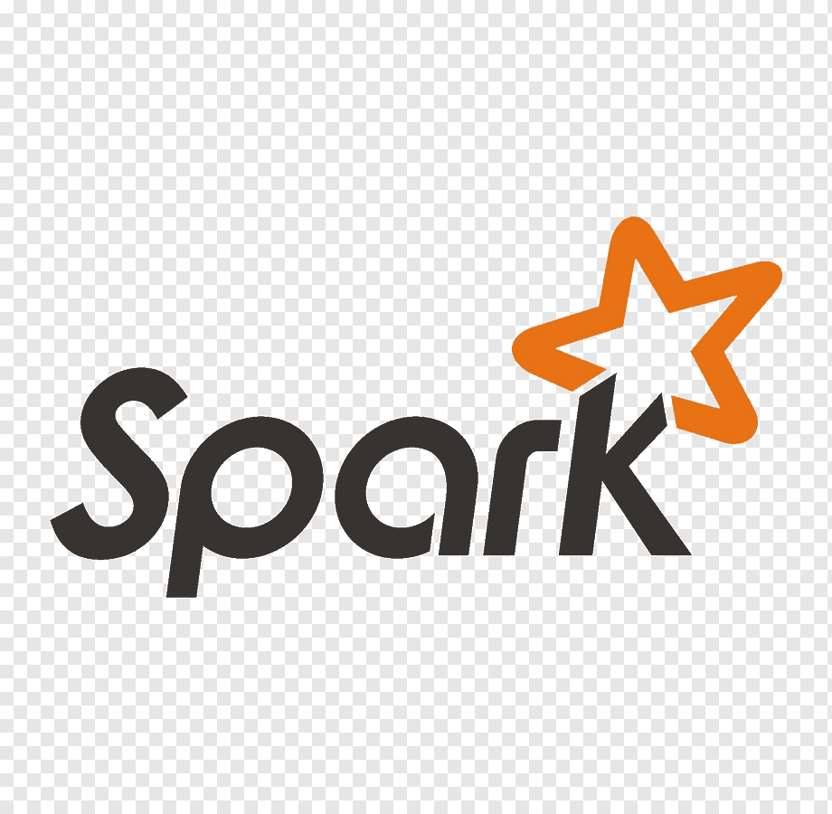
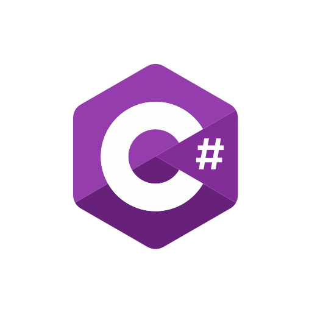

About Me
Hi, I'm Doğa
I’m a final-year Master’s (M2) student in the Master MIAGE - International Track in EIT Fintech / Data Science at the University of Rennes, seeking a 6-month graduation internship starting March 2027 (open to relocation across France).
With hands-on experience in Machine Learning, Data Engineering (ETL/ELT), and software development using Python and SQL, I focus on turning complex data into impactful, production-ready solutions. Explore my projects below and feel free to reach out!
View My ResumeEducation, Experience & Volunteering
Master 2 MIAGE - International Track in EIT Fintech / Data Science
ISTIC, University of Rennes (GPA: 15.85/20)
09/2025 – 09/2027 (Expected)
- Machine Learning & Data Mining
- Cloud & Big Data Architectures
- Fintech Case Studies & Quantitative Finance
REDINEST Impact Labs
ELTE University (Budapest, Hungary)
03/2026 – 06/2026
- Hybrid innovation program on urban digital transformation and civic engagement.
- Collaborated in an international team (Madrid, Belgrade, Évora, Rennes) on real-world challenges.
Volunteer (Student Food Distribution)
EpiFree Rennes (Rennes, France)
02/2026 – Present
- Actively participated in weekly food distributions: managed stands and assisted students.
Software Developer (Future Driver)
TürkTraktor
12/2023 – 05/2024
- Selected for the Future Driver graduate program.
- Developed interactive ABAP ALV reports from functional specifications to extract and filter SAP data.
- Automated operational business processes within an Agile workflow.
BSc in Computer Science
TOBB University of Economics and Technology
08/2019 – 09/2023
- Artificial Intelligence & Machine Learning
- Database Systems & Data Structures / Algorithms
Data Science Intern
Ave Informatics
05/2023 – 08/2023
- Preprocessed and cleaned textual data (tokenization, lemmatization) for NLP applications using Python and NLTK.
- Conducted unit testing (Cucumber, JUnit), updated documentation, and delivered clean datasets.
Software Development Intern
AYDIN Software and Electronics Industries Inc.
01/2022 – 04/2022
- Maintained and enhanced a Java application within a developer team, resolving user-reported bugs.
- Strengthened collaborative debugging and problem-solving skills.
Software Development Intern
ALTAY Information Technologies
04/2021 – 08/2021
- Designed and implemented RESTful APIs and scalable microservices using C#, ASP.NET Core, and Entity Framework.
My Projects
I continuously build end-to-end projects bridging Data Engineering, Machine Learning, and FinTech-from cloud ELT pipelines on Snowflake to distributed PySpark modeling and Bloomberg financial analysis.

Featured Projects
Loan Tracking ELT Pipeline
Implemented a Medallion architecture (Bronze/Silver/Gold) on Snowflake: ingested 9 CSV sources via Talend and built modular dbt transformations in SQL.
Footballers Market Value Predictor
Built a distributed big data pipeline using PySpark and MLlib: performed outlier/missing value handling and trained a Random Forest regression model (R² = 0.75).
Financial Analysis of Netflix Stock
Conducted comprehensive financial and non-financial equity analysis using Bloomberg Terminal (margins, valuation multiples, governance, and ESG) to formulate investment recommendations.
AI Story Generation System
Built a generative AI workflow using LangGraph to orchestrate multi-step LLM pipelines and OpenAI API to generate coherent narratives and accompanying visuals.
Music Reviewer Platform
Led backend development in a 3-person team: designed relational SQL schemas on PostgreSQL and built REST endpoints with Python and Flask.
IMDB Score Predictor
Performed exploratory data analysis and trained Machine Learning models (Linear Regression, Random Forest, KNN) using Python and scikit-learn.
Restaurant Ordering API
Developed a RESTful API for managing restaurant orders using Java Spring Boot and PostgreSQL, implementing CRUD operations, DTO handling, and JPA repositories.
MOVR VR Web Integration
Contributed in a 5-member agile team to integrate the MOVR web platform with a VR application using C#, Unity, and MongoDB.
Technologies & Skills
Data Science & AI
⚡ Machine Learning & Big Data modeling with Python, Scikit-learn, and PySpark
⚡ Generative AI workflows & NLP pipelines (LangGraph, OpenAI API, NLTK)

PySparkData Engineering & Backend
⚡ Modern ELT pipelines & Medallion architecture (Snowflake, dbt, Talend)
⚡ Relational databases & backend APIs (SQL, PostgreSQL, Java, C#, Flask)

C# (.NET)Let's Get In Touch
I'm actively seeking a 6-month graduation internship in Data Science, Data Engineering, or FinTech starting March 2027 (open to relocation across France). Feel free to reach out!
dogayalcn@gmail.com